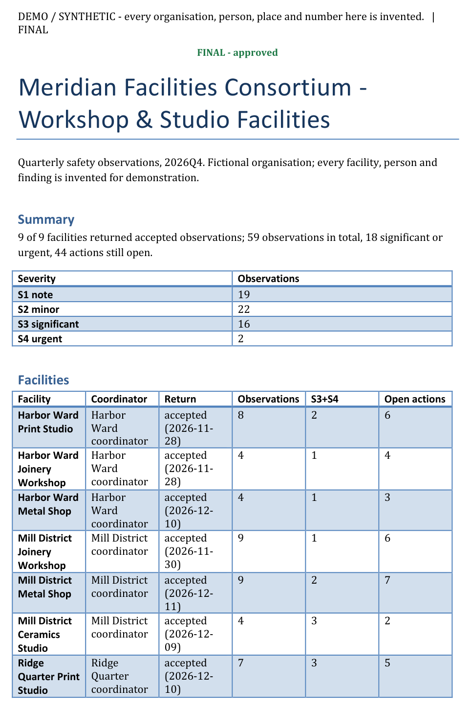
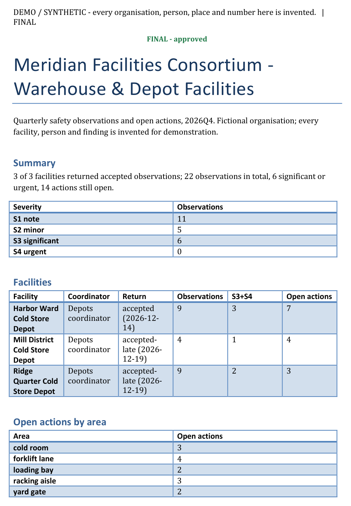

SafeSite Compliance Cycle
A quarterly safety-return cycle - reminders, checks, escalations and two Word reports - with nothing sent and no final overwritten.
11 automated tests. Video replayed from a real run (1.8 s).
Every three months twelve workshops and warehouses each hand in a safety sheet. Someone has to remind people before the deadline, check each sheet makes sense - every serious finding has a photo, the totals match the list - ask for corrections, chase the late ones, and finally write two reports. SafeSite does all of that for an invented consortium. It drafts every reminder but never sends one, it never sends the same reminder twice, and the final reports cannot be produced until every sheet is in.
SafeSite plans one assignment per facility with a due date and runs the cycle as of any date. As of each date it takes in the newest return per facility and checks it: exact columns, unique ids, severity S1 to S4, dates inside the quarter, an evidence reference for every S3 and S4, and totals that match the rows. A failed return gets a correction draft with the exact reason. Reminders are drafted 14 and 3 days before the deadline and an escalation after it, each at most once per facility. Two different Word reports are built as drafts; finals need every return accepted and a named approver, are read-only, and are never overwritten.
Step by step
submissions/<quarter>/<facility>_v<n>.xlsx | Each coordinator's return: an Observations sheet and a Totals sheet |
final/<Q>/*_FINAL.docx | Workshop & Studio report; Warehouse & Depot report |
qa/<Q>/QA_pack_<Q>.md | Every return, its file hash and its reminders |
outbox/<Q>/*.eml | Every reminder, correction and escalation, as drafts |
Predict, then see what the real run did
Every scene of the recorded run. Read what is about to happen, make a prediction, then reveal the actual terminal output. To run it yourself one scene at a time, use the CivicWorks Lab.
Break the data on purpose and watch what happens
Each experiment changed one thing in the real input data and ran the real pipeline beside a normal run. Below are only the lines of output the change made different. In the local Lab the same button runs it live, and you can make your own changes.
Give one late facility an extension
Facility F11 normally misses the 15 December deadline. Its return is made due on 31 December instead.
Point a facility at a coordinator who does not exist
Facility F01's assignment is given coordinator C9, who is not in the coordinator table.
Ask the pipeline's database a question
This is the real database a run of this pipeline left behind (safesite.sqlite, 76 KB). It opens in your browser - nothing to install, nothing sent anywhere. Each example teaches one SQL idea; edit it or write your own. Changes stay in your browser's copy.
The database, read from its own migrations
Built by applying the project's numbered migration scripts to an empty database. Blue marks a primary key; amber arrows are foreign keys - links the database itself enforces.
facility
- facility_id text pk
- name text
- area_code text
- category text
- unique (name)
coordinator
- coordinator_id text pk
- role text
- fictional_email text
assignment
- assignment_id text pk
- quarter text
- facility_id text → facility.facility_id
- coordinator_id text → coordinator.coordinator_id
- due_at text
- state text
- submitted_on text
- file_name text
- file_sha256 text
- note text
- unique (quarter, facility_id)
observation
- observation_id text pk
- assignment_id text pk → assignment.assignment_id
- observed_on text
- area text
- severity text
- description text
- action_state text
- evidence_ref text
reminder
- reminder_id integer pk
- assignment_id text → assignment.assignment_id
- kind text
- as_of text
- draft_path text
- unique (assignment_id, kind)
report_final
- quarter text pk
- variant text pk
- path text
- sha256 text
- approved_by text
- approved_at text
What it produced in the recorded run



Why it is built this way
One reminder per facility per kind, enforced by the database
instead of: Remembering in codeIf the cycle runs twice on the same day - and schedulers do that - nobody gets two copies.
Draft, never send
instead of: Sending emailA wrong mass email cannot be taken back. A person reviews the drafts; the code has no way to send.
Separate working, QA and final folders
instead of: One output folderNobody can mistake a draft for the approved report, and a final can never be overwritten by a later draft.
Accept late returns but mark them late
instead of: Refusing themThe data is still needed; the record should show it was late.
What goes wrong, and what happens
| situation | result |
|---|---|
| A serious finding without a photo reference | Correction requested: 'row 2: F03-O01 is S3 but has no evidence reference'. |
| Totals sheet disagrees with the rows | Correction requested, naming both numbers. |
| Two facilities miss the deadline | Escalations drafted with the safety lead copied; finals refused. |
Questions it answers
In shortThe system writes down every reminder it drafted and checks that list first.
In depthUNIQUE(assignment_id, kind) in SQLite; the cycle checks before drafting.
In shortBecause a wrong email cannot be taken back; a person checks first.
In depthOutbox of .eml drafts; no SMTP code; example.org addresses enforced.
python start.py # one command: sets everything up and opens the Lab cd safesite-compliance-cycle python -m safesite demo --out build/demo # or run just this demo python -m pytest # and its tests